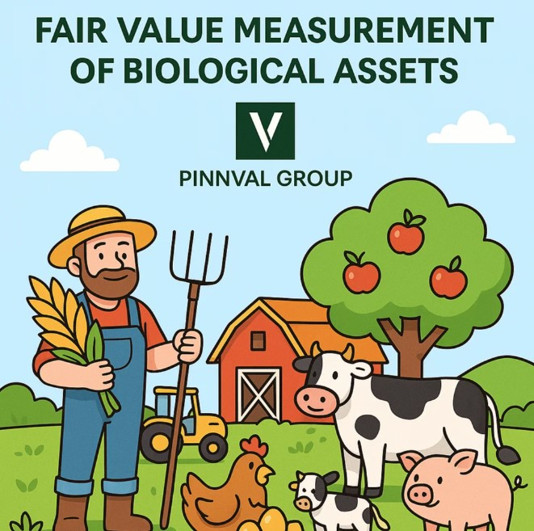

IAS 41 – Agriculture: Fair Value Measurement of Biological Assets
Agriculture is unlike most other industries—it deals with living assets that grow, mature, and are eventually harvested. The traditional cost-based accounting methods are insufficient to capture the dynamic nature of agricultural operations. That’s where IAS 41 – Agriculture comes in. Issued by the International Accounting Standards Board (IASB), IAS 41 introduces a distinct accounting treatment for biological assets and agricultural produce, requiring them to be measured at fair value less costs to sell (FVLCTS).
Can fair value accounting turn fields and farms into financial insight?
Nature doesn’t follow straight lines — and neither should your financials. Capture real-time value with IAS 41.
This approach ensures that the financial statements reflect the current economic value of these assets rather than outdated historical costs.
🌱 What Are Biological Assets?
According to IAS 41, biological assets are living plants and animals. This includes:
- Animals: dairy cows, sheep, goats, poultry, pigs, etc.
- Plants: tea bushes, grape vines, apple trees, rubber trees, sugarcane, etc.
The output derived from these biological assets (such as milk, harvested fruit, or wool) is classified as agricultural produce, which is separately accounted for under IAS 2 – Inventories after harvest.
💡 Core Principle: Fair Value Less Costs to Sell (FVLCTS)
The key principle of IAS 41 is that biological assets should be measured:
- At the time of initial recognition
- At the end of each reporting period
...using fair value less costs to sell.
Fair value refers to the price that would be received to sell an asset in an orderly transaction between market participants. Costs to sell include brokerage fees, levies, and other direct selling costs, but not transportation or finance costs.
This fair value approach provides a real-time valuation of biological assets, offering more relevant and timely information to users of financial statements.
📊 Determining Fair Value
Fair value is ideally based on observable market prices. However, if there is no active market for a particular biological asset, IAS 41 allows the use of alternative valuation techniques, such as:
- Market-determined prices for similar assets
- Recent market transactions
- Discounted cash flow models
Valuation requires a combination of market intelligence, biological understanding, and professional judgment.
🔍 Example: Valuing Dairy Cattle
Let’s assume a dairy farm has 40 cows at year-end. The market price for a cow is $1,500, and estimated selling costs are $100 per cow.
Fair Value per cow = $1,500 – $100 = $1,400
Total fair value of herd = 40 × $1,400 = $56,000
Any change in the fair value compared to the prior year (less any purchases or sales) is recognized as a gain or loss in the profit and loss statement.
📘 Key Provisions of IAS 41
- Initial Recognition: Biological assets must be recognized when:
- The entity controls the asset
- It is probable that future economic benefits will flow to the entity
- The fair value or cost of the asset can be measured reliably
- Subsequent Measurement: After initial recognition, all biological assets are measured at FVLCTS, except in rare cases where fair value cannot be measured reliably.
- Recognition of Changes: Any gain or loss arising from changes in fair value is recognized in profit or loss for the period in which the change occurs.
- Agricultural Produce at Harvest: At the point of harvest, agricultural produce is measured at FVLCTS, which then becomes its cost under IAS 2 – Inventories.
📈 Impact on Financial Statements
The fair value model under IAS 41 provides timely and relevant information for stakeholders, particularly in industries where biological transformation (growth, degeneration, procreation, and production) significantly impacts value.
However, this also introduces:
- Income statement volatility, as gains and losses reflect market fluctuations.
- Estimation risks, as fair value can be subjective in illiquid markets.
⚠️ Challenges in Applying IAS 41
While conceptually sound, applying IAS 41 comes with challenges:
- Lack of active markets for some biological assets, especially in remote regions.
- Subjectivity in valuation, especially when using internal models.
- Environmental risks (like weather, disease) can suddenly impact fair value.
- Cost of compliance due to the need for periodic fair value assessments.
In rare cases, when fair value cannot be reliably measured, IAS 41 permits the use of cost less accumulated depreciation and impairment—but only for the initial recognition phase.
🧠 Strategic Insights
For agribusinesses, timely valuation of biological assets provides a better reflection of operating performance. It aligns the accounting treatment with biological transformation, helping investors and managers assess the real-time value generation from nature.
However, companies must ensure:
- Robust valuation techniques
- Transparent disclosures
- Effective internal controls
📚 Summary
IAS 41 introduces a forward-looking accounting approach that values living plants and animals at fair market value, accounting for the constant changes they undergo. This makes financial reporting more relevant but also more complex and volatile. Understanding how to value and account for biological assets is essential for financial professionals working in agriculture, forestry, livestock, and similar sectors.
💬 Reflective Thought
"Nature grows in real-time—and so should your financial statements. IAS 41 brings agriculture to the balance sheet with economic realism."